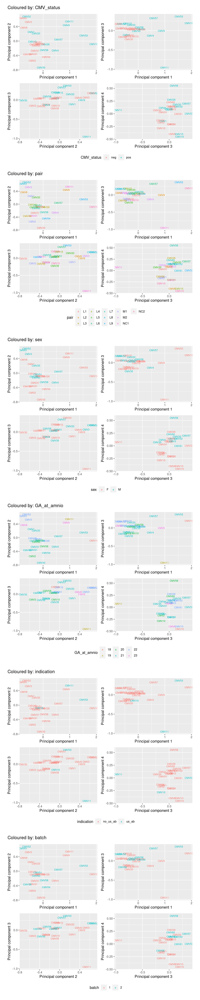

Limma-voom paired analysis of ALL samples
Last updated: 2020-10-13
Checks: 7 0
Knit directory: amnio-cell-free-RNA/
This reproducible R Markdown analysis was created with workflowr (version 1.6.2). The Checks tab describes the reproducibility checks that were applied when the results were created. The Past versions tab lists the development history.
Great! Since the R Markdown file has been committed to the Git repository, you know the exact version of the code that produced these results.
Great job! The global environment was empty. Objects defined in the global environment can affect the analysis in your R Markdown file in unknown ways. For reproduciblity it’s best to always run the code in an empty environment.
The command set.seed(20200224) was run prior to running the code in the R Markdown file. Setting a seed ensures that any results that rely on randomness, e.g. subsampling or permutations, are reproducible.
Great job! Recording the operating system, R version, and package versions is critical for reproducibility.
Nice! There were no cached chunks for this analysis, so you can be confident that you successfully produced the results during this run.
Great job! Using relative paths to the files within your workflowr project makes it easier to run your code on other machines.
Great! You are using Git for version control. Tracking code development and connecting the code version to the results is critical for reproducibility.
The results in this page were generated with repository version 2ee5593. See the Past versions tab to see a history of the changes made to the R Markdown and HTML files.
Note that you need to be careful to ensure that all relevant files for the analysis have been committed to Git prior to generating the results (you can use wflow_publish or wflow_git_commit). workflowr only checks the R Markdown file, but you know if there are other scripts or data files that it depends on. Below is the status of the Git repository when the results were generated:
Ignored files:
Ignored: .Rhistory
Ignored: .Rproj.user/
Ignored: code/.bpipe/
Ignored: code/.rnaseq-test.groovy.swp
Ignored: code/fastqc/
Ignored: data/.bpipe/
Ignored: data/190717_A00692_0021_AHLLHFDSXX/
Ignored: data/190729_A00692_0022_AHLLHFDSXX/
Ignored: data/190802_A00692_0023_AHLLHFDSXX/
Ignored: data/200612_A00692_0107_AHN3YCDMXX.tar
Ignored: data/200612_A00692_0107_AHN3YCDMXX/
Ignored: data/200626_A00692_0111_AHNJH7DMXX.tar
Ignored: data/200626_A00692_0111_AHNJH7DMXX/
Ignored: data/CMV-AF-database-final-included-samples.csv
Ignored: data/GONE4.10.13.txt
Ignored: data/HK_genes.txt
Ignored: data/IPA molecule summary.xls
Ignored: data/IPA-molecule-summary.csv
Ignored: data/bpipe.config
Ignored: data/brain-development-geneset.txt
Ignored: data/catfastq/
Ignored: data/commandlog.txt
Ignored: data/counts-pe/
Ignored: data/counts-se/
Ignored: data/deduped/
Ignored: data/fastqc/
Ignored: data/joindata.csv
Ignored: data/mapped/
Ignored: data/metadata.csv
Ignored: data/multiqc_data/
Ignored: data/multiqc_report.html
Ignored: data/old/
Ignored: data/samples.csv
Ignored: data/sorted/
Ignored: data/test/
Ignored: data/trimmed/
Ignored: output/c2Ens.RData
Ignored: output/c5Ens.RData
Ignored: output/exclude-CMV11/
Ignored: output/hEns.RData
Ignored: output/keggEns.RData
Ignored: output/salmon-limma-voom-c5Cam.csv
Ignored: output/salmon-limma-voom.Rmd/
Ignored: output/salmon-limma-voom.csv
Ignored: output/salmon-ruvseq-edger.csv
Ignored: output/star-fc-limma-voom-all-gsea-c5.csv
Ignored: output/star-fc-limma-voom-all.csv
Ignored: output/star-fc-limma-voom-no_us_ab-gsea-c5.csv
Ignored: output/star-fc-limma-voom-no_us_ab.csv
Untracked files:
Untracked: analysis/salmon-ruvseq-edger.Rmd
Unstaged changes:
Modified: analysis/salmon-limma-voom-exclude-CMV11.Rmd
Modified: analysis/salmon-limma-voom.Rmd
Note that any generated files, e.g. HTML, png, CSS, etc., are not included in this status report because it is ok for generated content to have uncommitted changes.
These are the previous versions of the repository in which changes were made to the R Markdown (analysis/STAR-FC-all.Rmd) and HTML (docs/STAR-FC-all.html) files. If you’ve configured a remote Git repository (see ?wflow_git_remote), click on the hyperlinks in the table below to view the files as they were in that past version.
| File | Version | Author | Date | Message |
|---|---|---|---|---|
| Rmd | 2ee5593 | Jovana Maksimovic | 2020-10-13 | wflow_publish(c(“analysis/index.Rmd”, “analysis/STAR-FC-all.Rmd”, |
The data showed some adapter contamination and sequence duplication issues. Adapters were removed using Trimmomatic and both paired and unpaired reads were retained. Only paired reads were initially mapped with Star in conjunction with GRCh38 and gencode_v34 to detect all junctions, across all samples. Paired and unpaired reads were then mapped to GRCh38 separately using Star. Duplicates were removed from paired and unpaired mapped data using Picard MarkDuplicates. Reads were then counted across features from gencode_v34 using featureCounts.
Data import
Set up DGElist object for downstream analysis. Sum paired and unpaired counts prior to downstream analysis.
An object of class "DGEList"
$counts
CMV30 CMV31 CMV8 CMV9 CMV26 CMV27 CMV14 CMV15 CMV20 CMV21 CMV1 CMV2 CMV3 CMV4
1 0 0 0 0 2 2 0 1 0 1 1 0 1 0
2 58 95 58 59 113 101 60 48 79 71 54 63 39 46
3 1 0 0 0 0 0 0 0 0 0 0 0 0 0
4 0 0 0 0 0 0 0 0 0 0 1 0 1 0
5 0 0 0 0 0 0 0 0 0 0 0 0 0 0
CMV10 CMV11 CMV18 CMV19 CMV35 Corriel NTC-2 CMV51 CMV52 CMV53 CMV54 CMV56
1 0 0 0 0 1 1 0 0 0 0 0 0
2 62 35 51 45 59 84 0 63 28 49 46 37
3 0 0 0 0 0 1 0 0 0 0 0 0
4 0 0 0 0 0 0 0 0 0 0 0 0
5 0 0 0 0 0 0 0 0 0 0 0 0
CMV57 CMV58 CMV60 CMV61
1 0 2 1 2
2 59 82 44 36
3 0 0 0 0
4 0 0 1 0
5 0 0 0 0
60664 more rows ...
$samples
group lib.size norm.factors
CMV30 1 4673630 1
CMV31 1 5232010 1
CMV8 1 3594801 1
CMV9 1 3425478 1
CMV26 1 4892776 1
25 more rows ...
$genes
Geneid Length
1 ENSG00000223972.5 1735
2 ENSG00000227232.5 1351
3 ENSG00000278267.1 68
4 ENSG00000243485.5 1021
5 ENSG00000284332.1 138
60664 more rows ...Load sample information and file names.
# A tibble: 27 x 7
id CMV_status pair sex GA_at_amnio indication batch
<chr> <chr> <chr> <chr> <chr> <chr> <fct>
1 CMV30 pos L1 F 21 no_us_ab 1
2 CMV31 neg L1 F 21 no_us_ab 1
3 CMV8 neg L2 F 23 no_us_ab 1
4 CMV9 pos L2 F 23 no_us_ab 1
5 CMV26 pos L3 F 22 no_us_ab 1
6 CMV27 neg L3 F 21 no_us_ab 1
7 CMV14 neg L4 F 21 no_us_ab 1
8 CMV15 pos L4 F 22 no_us_ab 1
9 CMV20 pos L5 M 21 no_us_ab 1
10 CMV21 neg L5 M 21 no_us_ab 1
# … with 17 more rowsIt appears that although sample ** was sequenced there is no associated sample information available.
Quality control
Genes that do not have an adequate number of reads in any sample should be filtered out prior to downstream analyses. From a biological perspective, genes that are not expressed at a biologically meaningful level in any condition are not of interest. Statistically, we get a better estimate of the mean-variance relationship in the data and reduce the number of statistical tests that are performed during differential expression analyses.
Filter out lowly expressed genes and genes without Entrez IDs and calculate TMM normalization factors.
An object of class "DGEList"
$counts
CMV30 CMV31 CMV8 CMV9 CMV26 CMV27 CMV14 CMV15 CMV20 CMV21 CMV1 CMV2 CMV3
32 20 36 28 42 28 27 25 19 26 18 32 25 55
52 88 73 55 43 55 48 75 53 64 55 61 68 36
55 6 15 17 15 15 18 9 14 13 12 7 10 16
63 148 172 148 126 175 164 179 176 141 179 155 194 121
64 14 15 14 11 20 22 14 9 13 14 13 13 19
CMV4 CMV10 CMV11 CMV18 CMV19 CMV35 CMV51 CMV52 CMV53 CMV54 CMV57 CMV58 CMV60
32 31 15 11 22 22 24 25 19 23 20 23 24 8
52 62 69 11 58 35 47 59 49 42 37 49 65 49
55 12 7 2 8 11 9 19 9 6 12 7 7 5
63 123 156 44 137 107 164 144 71 71 137 122 131 88
64 10 9 3 11 6 9 14 3 9 12 7 12 5
CMV61
32 20
52 49
55 6
63 108
64 3
12832 more rows ...
$samples
group lib.size norm.factors
CMV30 1 4673630 1.024775
CMV31 1 5232010 1.065477
CMV8 1 3594801 1.047658
CMV9 1 3425478 1.031390
CMV26 1 4892776 1.071329
22 more rows ...
$genes
Geneid Length Ensembl symbol entrezid
32 ENSG00000230021.10 5495 ENSG00000230021 RP5-857K21.4 101928626
52 ENSG00000228794.10 15682 ENSG00000228794 LINC01128 643837
55 ENSG00000230368.2 1971 ENSG00000230368 FAM41C 284593
63 ENSG00000188976.11 5540 ENSG00000188976 NOC2L 26155
64 ENSG00000187961.14 3402 ENSG00000187961 KLHL17 339451
12832 more rows ...
$group
[1] "pos" "neg" "neg" "pos" "pos"
22 more elements ...Plotting the distribution log-CPM values shows that a majority of genes within each sample are either not expressed or lowly-expressed with log-CPM values that are small or negative.

Although in excess of 30 million reads were obtained per sample, we can see that after mapping, duplicate removal and quantification of gene expression the median library size is just under than 4 million reads. This suggests that we are likely to only be capturing the most abundant cfRNAs.
It is assumed that all samples should have a similar range and distribution of expression values. The raw data looks fairly uniform between samples, although TMM normalization further improves this.

Multi-dimensional scaling (MDS) plots show the largest sources of variation in the data. They are a good way of exploring the relationships between the samples and identifying structure in the data. The following series of MDS plots examines the first four principal components. The samples are coloured by various known features of the samples such as CMV Status and foetal sex. The MDS plots do not show the samples strongly clustering by any of the known features of the data, although there does seem to be some separation between the CMV positive and negative samples in the 1st and 2nd principal components. This indicates that there are possibly some differentially expressed genes between CMV positive and negative samples.
A weak batch effect is also evident in the 3rd principal component, when we examine the plots coloured by batch.

Differential expression analysis
Due to the variability in the data, the TMM normalised data was transformed using voomWithQualityWeights. This takes into account the differing library sizes and the mean variance relationship in the data as well as calculating sample-specific quality weights. Linear models were fit in limma, taking into account the voom weights. The CMV positive samples were compared to the CMV negative samples, taking into account the sample pairs. A summary of the number of differentially expressed genes is shown below.

neg - pos
Down 110
NotSig 12715
Up 12There were 110 down-regulated and 12 up-regulated genes between CMV negative and CMV positive samples at FDR < 0.05.
These are the top 10 differentially expressed genes.
Geneid Length Ensembl symbol entrezid logFC
19329 ENSG00000206337.12 11058 ENSG00000206337 HCP5 10866 -4.4217072
45751 ENSG00000140853.15 12386 ENSG00000140853 NLRC5 84166 -2.6697592
8687 ENSG00000115415.20 9770 ENSG00000115415 STAT1 6772 -1.1859072
15204 ENSG00000137628.17 6746 ENSG00000137628 DDX60 55601 -1.5454189
46903 ENSG00000132530.17 6615 ENSG00000132530 XAF1 54739 -2.8615467
2226 ENSG00000117228.10 4862 ENSG00000117228 GBP1 2633 -2.0548819
2095 ENSG00000137965.11 2038 ENSG00000137965 IFI44 10561 -2.1351625
19309 ENSG00000234745.11 3051 ENSG00000234745 HLA-B 3106 -3.0780336
14991 ENSG00000109670.16 10979 ENSG00000109670 FBXW7 55294 -0.3929874
57140 ENSG00000221963.6 10065 ENSG00000221963 APOL6 80830 -0.9850455
AveExpr t P.Value adj.P.Val B
19329 1.768841 -10.203796 1.676381e-08 0.000215197 7.361851
45751 2.166865 -8.381236 1.730472e-07 0.001110704 6.357272
8687 7.897429 -7.713948 7.119535e-07 0.001832652 6.226479
15204 5.933518 -7.829991 8.102527e-07 0.001832652 6.130869
46903 4.772295 -7.908696 7.363658e-07 0.001832652 6.105664
2226 4.018151 -7.526371 9.993428e-07 0.001832652 5.638801
2095 4.260500 -7.569109 1.280462e-06 0.001968467 5.624561
19309 4.420242 -7.427039 1.621137e-06 0.001979753 5.327371
14991 6.350973 -6.825732 1.696446e-06 0.001979753 5.300696
57140 6.298005 -6.805978 3.116829e-06 0.003063551 4.769248The following plots show the expression of the top 12 ranked differentially expressed genes for CMV negative and CMV positive samples. Although there is significant variability within the groups and the log2 fold changes are not large, there are obvious differences in expression for the top ranked genes.
Gene set enrichment analysis (GSEA)
Testing for enrichment of Gene Ontology (GO) categories among statistically significant differentially expressed genes.
Term Ont N DE P.DE
GO:0009615 response to virus BP 223 29 3.692169e-25
GO:0051607 defense response to virus BP 162 25 1.273311e-23
GO:0071357 cellular response to type I interferon BP 68 19 2.142806e-23
GO:0060337 type I interferon signaling pathway BP 68 19 2.142806e-23
GO:0034340 response to type I interferon BP 72 19 7.299790e-23
GO:0045087 innate immune response BP 544 37 4.779027e-22
GO:0009607 response to biotic stimulus BP 566 37 1.876930e-21
GO:0043207 response to external biotic stimulus BP 538 36 3.409873e-21
GO:0051707 response to other organism BP 538 36 3.409873e-21
GO:0006952 defense response BP 890 42 4.307802e-19
GO:0098542 defense response to other organism BP 259 25 1.642687e-18
GO:0006955 immune response BP 1186 47 1.930583e-18
GO:0002376 immune system process BP 1845 53 6.578631e-15
GO:0034341 response to interferon-gamma BP 119 15 3.656745e-13
GO:0071346 cellular response to interferon-gamma BP 107 14 1.382738e-12
GO:0043900 regulation of multi-organism process BP 292 20 3.979750e-12
GO:0034097 response to cytokine BP 790 31 7.345961e-12
GO:0019221 cytokine-mediated signaling pathway BP 503 25 7.657322e-12
GO:0051704 multi-organism process BP 1641 45 1.039282e-11
GO:0060333 interferon-gamma-mediated signaling pathway BP 61 11 1.046383e-11GSEA helps us to interpret the results of a differential expression analysis. The camera function performs a competitive test to assess whether the genes in a given set are highly ranked in terms of differential expression relative to genes that are not in the set. We have tested several collections of gene sets from the Broad Institute’s Molecular Signatures Database MSigDB.
Build gene set indexes.
[1] "Loading MSigDB Gene Sets ... "
[1] "Loaded gene sets for the collection h ..."
[1] "Indexed the collection h ..."
[1] "Created annotation for the collection h ..."
[1] "Loaded gene sets for the collection c2 ..."
[1] "Indexed the collection c2 ..."
[1] "Created annotation for the collection c2 ..."
[1] "Loaded gene sets for the collection c5 ..."
[1] "Indexed the collection c5 ..."
[1] "Created annotation for the collection c5 ..."
[1] "Building KEGG pathways annotation object ... "The GO gene sets consist of genes annotated by the same GO terms.
NGenes
GO_RESPONSE_TO_TYPE_I_INTERFERON 48
GO_INTERFERON_GAMMA_MEDIATED_SIGNALING_PATHWAY 43
GO_ANTIGEN_PROCESSING_AND_PRESENTATION_OF_ENDOGENOUS_PEPTIDE_ANTIGEN 11
GO_DEFENSE_RESPONSE_TO_VIRUS 111
GO_ANTIGEN_PROCESSING_AND_PRESENTATION_OF_ENDOGENOUS_ANTIGEN 13
GO_RESPONSE_TO_INTERFERON_GAMMA 72
GO_CELLULAR_RESPONSE_TO_INTERFERON_GAMMA 60
GO_DIGESTION 59
GO_REGULATION_OF_CELL_KILLING 32
GO_MHC_PROTEIN_COMPLEX 11
GO_REGULATION_OF_LEUKOCYTE_MEDIATED_CYTOTOXICITY 29
GO_NEGATIVE_REGULATION_OF_CELL_KILLING 12
GO_NEGATIVE_REGULATION_OF_VIRAL_GENOME_REPLICATION 40
GO_CYTOKINE_MEDIATED_SIGNALING_PATHWAY 252
GO_MHC_CLASS_I_PROTEIN_COMPLEX 7
GO_ESTABLISHMENT_OF_PROTEIN_LOCALIZATION_TO_ENDOPLASMIC_RETICULUM 96
GO_RESPONSE_TO_VIRUS 168
GO_CYTOSOLIC_RIBOSOME 99
GO_TRANSLATIONAL_INITIATION 136
GO_RESPONSE_TO_INTERFERON_ALPHA 18
Direction
GO_RESPONSE_TO_TYPE_I_INTERFERON Down
GO_INTERFERON_GAMMA_MEDIATED_SIGNALING_PATHWAY Down
GO_ANTIGEN_PROCESSING_AND_PRESENTATION_OF_ENDOGENOUS_PEPTIDE_ANTIGEN Down
GO_DEFENSE_RESPONSE_TO_VIRUS Down
GO_ANTIGEN_PROCESSING_AND_PRESENTATION_OF_ENDOGENOUS_ANTIGEN Down
GO_RESPONSE_TO_INTERFERON_GAMMA Down
GO_CELLULAR_RESPONSE_TO_INTERFERON_GAMMA Down
GO_DIGESTION Down
GO_REGULATION_OF_CELL_KILLING Down
GO_MHC_PROTEIN_COMPLEX Down
GO_REGULATION_OF_LEUKOCYTE_MEDIATED_CYTOTOXICITY Down
GO_NEGATIVE_REGULATION_OF_CELL_KILLING Down
GO_NEGATIVE_REGULATION_OF_VIRAL_GENOME_REPLICATION Down
GO_CYTOKINE_MEDIATED_SIGNALING_PATHWAY Down
GO_MHC_CLASS_I_PROTEIN_COMPLEX Down
GO_ESTABLISHMENT_OF_PROTEIN_LOCALIZATION_TO_ENDOPLASMIC_RETICULUM Up
GO_RESPONSE_TO_VIRUS Down
GO_CYTOSOLIC_RIBOSOME Up
GO_TRANSLATIONAL_INITIATION Up
GO_RESPONSE_TO_INTERFERON_ALPHA Down
PValue
GO_RESPONSE_TO_TYPE_I_INTERFERON 1.034542e-29
GO_INTERFERON_GAMMA_MEDIATED_SIGNALING_PATHWAY 2.280452e-14
GO_ANTIGEN_PROCESSING_AND_PRESENTATION_OF_ENDOGENOUS_PEPTIDE_ANTIGEN 1.792895e-13
GO_DEFENSE_RESPONSE_TO_VIRUS 2.142883e-13
GO_ANTIGEN_PROCESSING_AND_PRESENTATION_OF_ENDOGENOUS_ANTIGEN 4.372379e-13
GO_RESPONSE_TO_INTERFERON_GAMMA 1.117927e-12
GO_CELLULAR_RESPONSE_TO_INTERFERON_GAMMA 1.014252e-11
GO_DIGESTION 5.209743e-09
GO_REGULATION_OF_CELL_KILLING 1.242093e-08
GO_MHC_PROTEIN_COMPLEX 1.361707e-08
GO_REGULATION_OF_LEUKOCYTE_MEDIATED_CYTOTOXICITY 2.127214e-08
GO_NEGATIVE_REGULATION_OF_CELL_KILLING 3.755504e-08
GO_NEGATIVE_REGULATION_OF_VIRAL_GENOME_REPLICATION 4.222545e-08
GO_CYTOKINE_MEDIATED_SIGNALING_PATHWAY 4.421890e-08
GO_MHC_CLASS_I_PROTEIN_COMPLEX 4.520745e-08
GO_ESTABLISHMENT_OF_PROTEIN_LOCALIZATION_TO_ENDOPLASMIC_RETICULUM 4.594348e-08
GO_RESPONSE_TO_VIRUS 9.402094e-08
GO_CYTOSOLIC_RIBOSOME 1.016686e-07
GO_TRANSLATIONAL_INITIATION 1.050972e-07
GO_RESPONSE_TO_INTERFERON_ALPHA 1.247551e-07
FDR
GO_RESPONSE_TO_TYPE_I_INTERFERON 6.373814e-26
GO_INTERFERON_GAMMA_MEDIATED_SIGNALING_PATHWAY 7.024932e-11
GO_ANTIGEN_PROCESSING_AND_PRESENTATION_OF_ENDOGENOUS_PEPTIDE_ANTIGEN 3.300575e-10
GO_DEFENSE_RESPONSE_TO_VIRUS 3.300575e-10
GO_ANTIGEN_PROCESSING_AND_PRESENTATION_OF_ENDOGENOUS_ANTIGEN 5.387646e-10
GO_RESPONSE_TO_INTERFERON_GAMMA 1.147924e-09
GO_CELLULAR_RESPONSE_TO_INTERFERON_GAMMA 8.926865e-09
GO_DIGESTION 4.012153e-06
GO_REGULATION_OF_CELL_KILLING 8.389478e-06
GO_MHC_PROTEIN_COMPLEX 8.389478e-06
GO_REGULATION_OF_LEUKOCYTE_MEDIATED_CYTOTOXICITY 1.191433e-05
GO_NEGATIVE_REGULATION_OF_CELL_KILLING 1.769111e-05
GO_NEGATIVE_REGULATION_OF_VIRAL_GENOME_REPLICATION 1.769111e-05
GO_CYTOKINE_MEDIATED_SIGNALING_PATHWAY 1.769111e-05
GO_MHC_CLASS_I_PROTEIN_COMPLEX 1.769111e-05
GO_ESTABLISHMENT_OF_PROTEIN_LOCALIZATION_TO_ENDOPLASMIC_RETICULUM 1.769111e-05
GO_RESPONSE_TO_VIRUS 3.407430e-05
GO_CYTOSOLIC_RIBOSOME 3.407916e-05
GO_TRANSLATIONAL_INITIATION 3.407916e-05
GO_RESPONSE_TO_INTERFERON_ALPHA 3.843080e-05The Hallmark gene sets are coherently expressed signatures derived by aggregating many MSigDB gene sets to represent well-defined biological states or processes.
NGenes Direction PValue FDR
HALLMARK_INTERFERON_ALPHA_RESPONSE 81 Down 3.942525e-50 1.971263e-48
HALLMARK_INTERFERON_GAMMA_RESPONSE 148 Down 6.819770e-36 1.704942e-34
HALLMARK_MYC_TARGETS_V1 198 Up 3.869667e-08 6.449445e-07
HALLMARK_INFLAMMATORY_RESPONSE 117 Down 6.615917e-08 8.269896e-07
HALLMARK_TNFA_SIGNALING_VIA_NFKB 162 Down 3.027798e-06 3.027798e-05
HALLMARK_KRAS_SIGNALING_UP 134 Down 5.885885e-06 4.904904e-05
HALLMARK_IL6_JAK_STAT3_SIGNALING 48 Down 1.371485e-05 9.796321e-05
HALLMARK_COMPLEMENT 141 Down 1.769323e-05 1.105827e-04
HALLMARK_E2F_TARGETS 196 Up 5.171640e-05 2.873133e-04
HALLMARK_ALLOGRAFT_REJECTION 103 Down 6.061259e-04 3.030629e-03
HALLMARK_MYC_TARGETS_V2 54 Up 8.894955e-03 3.883667e-02
HALLMARK_OXIDATIVE_PHOSPHORYLATION 197 Up 9.320802e-03 3.883667e-02
HALLMARK_COAGULATION 84 Down 1.782364e-02 6.855247e-02
HALLMARK_DNA_REPAIR 145 Up 1.942333e-02 6.936905e-02
HALLMARK_G2M_CHECKPOINT 194 Up 2.767017e-02 9.223389e-02
HALLMARK_MITOTIC_SPINDLE 192 Up 4.516593e-02 1.411435e-01
HALLMARK_IL2_STAT5_SIGNALING 142 Down 5.446894e-02 1.602028e-01
HALLMARK_ANDROGEN_RESPONSE 96 Down 6.236255e-02 1.667537e-01
HALLMARK_XENOBIOTIC_METABOLISM 142 Down 6.336640e-02 1.667537e-01
HALLMARK_APICAL_SURFACE 31 Down 7.986385e-02 1.996596e-01Barcode plots show the enrichment of gene sets among up or down-regulated genes. The following barcode plots show the enrichment of the top 4 hallmark gene sets among the genes differentially expressed between CMV negative and CMV positive samples.

[[1]]
NULL
[[2]]
NULL
[[3]]
NULL
[[4]]
NULLThe curated gene sets are compiled from online pathway databases, publications in PubMed, and knowledge of domain experts.
NGenes Direction PValue
BROWNE_INTERFERON_RESPONSIVE_GENES 55 Down 5.001050e-47
MOSERLE_IFNA_RESPONSE 27 Down 6.510453e-46
SANA_RESPONSE_TO_IFNG_UP 49 Down 1.137572e-40
HECKER_IFNB1_TARGETS 59 Down 3.503547e-40
FARMER_BREAST_CANCER_CLUSTER_1 15 Down 2.305165e-31
BOSCO_INTERFERON_INDUCED_ANTIVIRAL_MODULE 60 Down 7.923202e-30
DAUER_STAT3_TARGETS_DN 49 Down 1.839585e-28
SANA_TNF_SIGNALING_UP 63 Down 4.014262e-28
EINAV_INTERFERON_SIGNATURE_IN_CANCER 24 Down 3.121702e-26
REACTOME_INTERFERON_ALPHA_BETA_SIGNALING 44 Down 1.165011e-24
BENNETT_SYSTEMIC_LUPUS_ERYTHEMATOSUS 24 Down 3.682791e-24
BOWIE_RESPONSE_TO_TAMOXIFEN 16 Down 9.036505e-23
RADAEVA_RESPONSE_TO_IFNA1_UP 45 Down 1.447500e-22
ZHANG_INTERFERON_RESPONSE 18 Down 1.216064e-21
BOWIE_RESPONSE_TO_EXTRACELLULAR_MATRIX 16 Down 4.089120e-21
DER_IFN_ALPHA_RESPONSE_UP 67 Down 1.600313e-19
TAKEDA_TARGETS_OF_NUP98_HOXA9_FUSION_3D_UP 130 Down 9.099153e-19
ZHU_CMV_8_HR_UP 40 Down 2.644908e-18
KRASNOSELSKAYA_ILF3_TARGETS_UP 30 Down 6.149601e-18
SEITZ_NEOPLASTIC_TRANSFORMATION_BY_8P_DELETION_UP 56 Down 9.957637e-18
FDR
BROWNE_INTERFERON_RESPONSIVE_GENES 1.870893e-43
MOSERLE_IFNA_RESPONSE 1.217780e-42
SANA_RESPONSE_TO_IFNG_UP 1.418552e-37
HECKER_IFNB1_TARGETS 3.276692e-37
FARMER_BREAST_CANCER_CLUSTER_1 1.724725e-28
BOSCO_INTERFERON_INDUCED_ANTIVIRAL_MODULE 4.940116e-27
DAUER_STAT3_TARGETS_DN 9.831267e-26
SANA_TNF_SIGNALING_UP 1.877169e-25
EINAV_INTERFERON_SIGNATURE_IN_CANCER 1.297588e-23
REACTOME_INTERFERON_ALPHA_BETA_SIGNALING 4.358304e-22
BENNETT_SYSTEMIC_LUPUS_ERYTHEMATOSUS 1.252484e-21
BOWIE_RESPONSE_TO_TAMOXIFEN 2.817130e-20
RADAEVA_RESPONSE_TO_IFNA1_UP 4.165460e-20
ZHANG_INTERFERON_RESPONSE 3.249496e-19
BOWIE_RESPONSE_TO_EXTRACELLULAR_MATRIX 1.019827e-18
DER_IFN_ALPHA_RESPONSE_UP 3.741732e-17
TAKEDA_TARGETS_OF_NUP98_HOXA9_FUSION_3D_UP 2.002349e-16
ZHU_CMV_8_HR_UP 5.497000e-16
KRASNOSELSKAYA_ILF3_TARGETS_UP 1.210824e-15
SEITZ_NEOPLASTIC_TRANSFORMATION_BY_8P_DELETION_UP 1.862576e-15The following barcode plots show the enrichment of the top 4 curated gene sets among the genes differentially expressed between CMV negative and CMV positive samples.

[[1]]
NULL
[[2]]
NULL
[[3]]
NULL
[[4]]
NULLThe KEGG gene sets encompass all of the pathways defined in the Kegg pathway database.
NGenes Direction PValue
Mineral absorption 36 Down 2.634921e-09
Fat digestion and absorption 23 Down 4.545742e-08
Antigen processing and presentation 39 Down 1.132302e-07
Ribosome 125 Up 1.959660e-07
Graft-versus-host disease 8 Down 2.069090e-07
Type I diabetes mellitus 12 Down 3.242434e-07
Cytokine-cytokine receptor interaction 89 Down 1.383064e-06
Autoimmune thyroid disease 10 Down 1.563290e-06
Allograft rejection 9 Down 3.063839e-06
NOD-like receptor signaling pathway 117 Down 2.206768e-05
Bile secretion 34 Down 4.851929e-05
Influenza A 119 Down 1.241349e-04
Hepatitis C 99 Down 1.553833e-04
Cell adhesion molecules (CAMs) 56 Down 1.950267e-04
Nucleotide excision repair 43 Up 3.097426e-04
Cysteine and methionine metabolism 33 Up 3.740407e-04
Hematopoietic cell lineage 27 Down 4.051243e-04
Measles 89 Down 5.539860e-04
Mismatch repair 22 Up 5.645571e-04
DNA replication 33 Up 7.000871e-04
FDR
Mineral absorption 7.667619e-07
Fat digestion and absorption 6.614055e-06
Antigen processing and presentation 1.098333e-05
Ribosome 1.204211e-05
Graft-versus-host disease 1.204211e-05
Type I diabetes mellitus 1.572581e-05
Cytokine-cytokine receptor interaction 5.686468e-05
Autoimmune thyroid disease 5.686468e-05
Allograft rejection 9.906411e-05
NOD-like receptor signaling pathway 6.421696e-04
Bile secretion 1.283556e-03
Influenza A 3.010271e-03
Hepatitis C 3.478196e-03
Cell adhesion molecules (CAMs) 4.053770e-03
Nucleotide excision repair 6.009006e-03
Cysteine and methionine metabolism 6.802865e-03
Hematopoietic cell lineage 6.934774e-03
Measles 8.646638e-03
Mismatch repair 8.646638e-03
DNA replication 1.018627e-02
[[1]]
NULL
[[2]]
NULL
[[3]]
NULL
[[4]]
NULLTest the specialised brain development gene set.
# A tibble: 51 x 1
BRAIN_DEV
<chr>
1 AC139768.1
2 ADGRG1
3 AFF2
4 ALK
5 ALX1
6 BPTF
7 CDK5R1
8 CEP290
9 CLN5
10 CNTN4
# … with 41 more rows NGenes PropDown PropUp Direction PValue FDR PValue.Mixed
BRAIN_DEV 27 0.03703704 0.07407407 Down 0.8775 0.8775 0.3555
FDR.Mixed
BRAIN_DEV 0.3555
Summary
Although the effective library sizes were low, the data is generally of good quality. We found at total of 122 differentially expressed genes at FDR < 0.05. The significant genes were enriched for GO terms associated with interferon response and similar. Further gene set testing results indicate an upregulation of interferon response genes in the CMV positive samples, relative to the CMV negative samples, which is consistent with the top genes from the DE analysis.
R version 3.6.1 (2019-07-05)
Platform: x86_64-pc-linux-gnu (64-bit)
Running under: CentOS Linux 7 (Core)
Matrix products: default
BLAS: /config/RStudio/R/3.6.1/lib64/R/lib/libRblas.so
LAPACK: /config/RStudio/R/3.6.1/lib64/R/lib/libRlapack.so
locale:
[1] LC_CTYPE=en_AU.UTF-8 LC_NUMERIC=C
[3] LC_TIME=en_AU.UTF-8 LC_COLLATE=en_AU.UTF-8
[5] LC_MONETARY=en_AU.UTF-8 LC_MESSAGES=en_AU.UTF-8
[7] LC_PAPER=en_AU.UTF-8 LC_NAME=C
[9] LC_ADDRESS=C LC_TELEPHONE=C
[11] LC_MEASUREMENT=en_AU.UTF-8 LC_IDENTIFICATION=C
attached base packages:
[1] stats4 parallel stats graphics grDevices utils datasets
[8] methods base
other attached packages:
[1] RColorBrewer_1.1-2 EGSEA_1.12.0
[3] pathview_1.24.0 org.Hs.eg.db_3.8.2
[5] topGO_2.36.0 SparseM_1.77
[7] GO.db_3.8.2 graph_1.62.0
[9] gage_2.34.0 patchwork_1.0.1
[11] NMF_0.22.0 cluster_2.1.0
[13] rngtools_1.4 pkgmaker_0.27
[15] registry_0.5-1 edgeR_3.26.8
[17] limma_3.42.2 EnsDb.Hsapiens.v86_2.99.0
[19] ensembldb_2.8.0 AnnotationFilter_1.8.0
[21] GenomicFeatures_1.36.4 AnnotationDbi_1.46.1
[23] Biobase_2.46.0 GenomicRanges_1.38.0
[25] GenomeInfoDb_1.22.1 IRanges_2.20.2
[27] S4Vectors_0.24.4 BiocGenerics_0.32.0
[29] forcats_0.4.0 stringr_1.4.0
[31] dplyr_1.0.0 purrr_0.3.4
[33] readr_1.3.1 tidyr_1.1.0
[35] tibble_3.0.1 ggplot2_3.3.2
[37] tidyverse_1.3.0 here_0.1
[39] workflowr_1.6.2
loaded via a namespace (and not attached):
[1] utf8_1.1.4 tidyselect_1.1.0
[3] RSQLite_2.1.2 htmlwidgets_1.3
[5] grid_3.6.1 KEGG.db_3.2.3
[7] BiocParallel_1.20.1 R2HTML_2.3.2
[9] munsell_0.5.0 codetools_0.2-16
[11] statmod_1.4.32 DT_0.9
[13] KEGGdzPathwaysGEO_1.22.0 withr_2.2.0
[15] colorspace_1.4-1 knitr_1.29
[17] rstudioapi_0.11 gbRd_0.4-11
[19] labeling_0.3 Rdpack_0.11-0
[21] git2r_0.27.1 KEGGgraph_1.44.0
[23] org.Rn.eg.db_3.8.2 GenomeInfoDbData_1.2.1
[25] hwriter_1.3.2 farver_2.0.3
[27] bit64_0.9-7 rprojroot_1.3-2
[29] vctrs_0.3.1 generics_0.0.2
[31] xfun_0.15 BiocFileCache_1.10.2
[33] R6_2.4.1 doParallel_1.0.15
[35] Glimma_1.12.0 locfit_1.5-9.1
[37] bitops_1.0-6 DelayedArray_0.12.3
[39] assertthat_0.2.1 promises_1.1.1
[41] scales_1.1.1 gtable_0.3.0
[43] org.Mm.eg.db_3.8.2 rlang_0.4.6
[45] splines_3.6.1 rtracklayer_1.44.4
[47] lazyeval_0.2.2 PADOG_1.26.0
[49] broom_0.5.2 yaml_2.2.1
[51] reshape2_1.4.3 modelr_0.1.8
[53] backports_1.1.8 httpuv_1.5.4
[55] tools_3.6.1 gridBase_0.4-7
[57] ellipsis_0.3.1 gplots_3.0.1.1
[59] HTMLUtils_0.1.7 Rcpp_1.0.4.6
[61] plyr_1.8.6 progress_1.2.2
[63] zlibbioc_1.30.0 RCurl_1.95-4.12
[65] prettyunits_1.1.1 openssl_1.4.1
[67] hgu133plus2.db_3.2.3 SummarizedExperiment_1.16.1
[69] haven_2.3.1 fs_1.4.2
[71] magrittr_1.5 data.table_1.12.8
[73] reprex_0.3.0 whisker_0.4
[75] ProtGenerics_1.16.0 matrixStats_0.56.0
[77] hms_0.5.3 mime_0.9
[79] evaluate_0.14 GSVA_1.32.0
[81] xtable_1.8-4 globaltest_5.40.0
[83] XML_3.98-1.20 hgu133a.db_3.2.3
[85] readxl_1.3.1 EGSEAdata_1.12.0
[87] compiler_3.6.1 biomaRt_2.42.1
[89] safe_3.24.0 KernSmooth_2.23-15
[91] crayon_1.3.4 htmltools_0.5.0
[93] later_1.1.0.1 geneplotter_1.62.0
[95] lubridate_1.7.4 DBI_1.0.0
[97] dbplyr_1.4.2 rappdirs_0.3.1
[99] Matrix_1.2-18 cli_2.0.2
[101] gdata_2.18.0 metap_1.1
[103] pkgconfig_2.0.3 GenomicAlignments_1.20.1
[105] plotly_4.9.0 xml2_1.3.2
[107] foreach_1.5.0 annotate_1.62.0
[109] XVector_0.24.0 bibtex_0.4.2
[111] rvest_0.3.5 doRNG_1.7.1
[113] digest_0.6.25 Biostrings_2.54.0
[115] rmarkdown_2.3 cellranger_1.1.0
[117] GSEABase_1.46.0 curl_4.3
[119] shiny_1.3.2 Rsamtools_2.0.1
[121] gtools_3.8.1 GSA_1.03.1
[123] lifecycle_0.2.0 nlme_3.1-148
[125] jsonlite_1.7.0 viridisLite_0.3.0
[127] askpass_1.1 fansi_0.4.1
[129] pillar_1.4.4 lattice_0.20-41
[131] survival_2.44-1.1 KEGGREST_1.24.0
[133] httr_1.4.1 glue_1.4.1
[135] png_0.1-7 shinythemes_1.1.2
[137] iterators_1.0.12 bit_1.1-14
[139] Rgraphviz_2.28.0 stringi_1.4.6
[141] blob_1.2.0 caTools_1.17.1.2
[143] memoise_1.1.0
sessionInfo()R version 3.6.1 (2019-07-05)
Platform: x86_64-pc-linux-gnu (64-bit)
Running under: CentOS Linux 7 (Core)
Matrix products: default
BLAS: /config/RStudio/R/3.6.1/lib64/R/lib/libRblas.so
LAPACK: /config/RStudio/R/3.6.1/lib64/R/lib/libRlapack.so
locale:
[1] LC_CTYPE=en_AU.UTF-8 LC_NUMERIC=C
[3] LC_TIME=en_AU.UTF-8 LC_COLLATE=en_AU.UTF-8
[5] LC_MONETARY=en_AU.UTF-8 LC_MESSAGES=en_AU.UTF-8
[7] LC_PAPER=en_AU.UTF-8 LC_NAME=C
[9] LC_ADDRESS=C LC_TELEPHONE=C
[11] LC_MEASUREMENT=en_AU.UTF-8 LC_IDENTIFICATION=C
attached base packages:
[1] stats4 parallel stats graphics grDevices utils datasets
[8] methods base
other attached packages:
[1] RColorBrewer_1.1-2 EGSEA_1.12.0
[3] pathview_1.24.0 org.Hs.eg.db_3.8.2
[5] topGO_2.36.0 SparseM_1.77
[7] GO.db_3.8.2 graph_1.62.0
[9] gage_2.34.0 patchwork_1.0.1
[11] NMF_0.22.0 cluster_2.1.0
[13] rngtools_1.4 pkgmaker_0.27
[15] registry_0.5-1 edgeR_3.26.8
[17] limma_3.42.2 EnsDb.Hsapiens.v86_2.99.0
[19] ensembldb_2.8.0 AnnotationFilter_1.8.0
[21] GenomicFeatures_1.36.4 AnnotationDbi_1.46.1
[23] Biobase_2.46.0 GenomicRanges_1.38.0
[25] GenomeInfoDb_1.22.1 IRanges_2.20.2
[27] S4Vectors_0.24.4 BiocGenerics_0.32.0
[29] forcats_0.4.0 stringr_1.4.0
[31] dplyr_1.0.0 purrr_0.3.4
[33] readr_1.3.1 tidyr_1.1.0
[35] tibble_3.0.1 ggplot2_3.3.2
[37] tidyverse_1.3.0 here_0.1
[39] workflowr_1.6.2
loaded via a namespace (and not attached):
[1] utf8_1.1.4 tidyselect_1.1.0
[3] RSQLite_2.1.2 htmlwidgets_1.3
[5] grid_3.6.1 KEGG.db_3.2.3
[7] BiocParallel_1.20.1 R2HTML_2.3.2
[9] munsell_0.5.0 codetools_0.2-16
[11] statmod_1.4.32 DT_0.9
[13] KEGGdzPathwaysGEO_1.22.0 withr_2.2.0
[15] colorspace_1.4-1 knitr_1.29
[17] rstudioapi_0.11 gbRd_0.4-11
[19] labeling_0.3 Rdpack_0.11-0
[21] git2r_0.27.1 KEGGgraph_1.44.0
[23] org.Rn.eg.db_3.8.2 GenomeInfoDbData_1.2.1
[25] hwriter_1.3.2 farver_2.0.3
[27] bit64_0.9-7 rprojroot_1.3-2
[29] vctrs_0.3.1 generics_0.0.2
[31] xfun_0.15 BiocFileCache_1.10.2
[33] R6_2.4.1 doParallel_1.0.15
[35] Glimma_1.12.0 locfit_1.5-9.1
[37] bitops_1.0-6 DelayedArray_0.12.3
[39] assertthat_0.2.1 promises_1.1.1
[41] scales_1.1.1 gtable_0.3.0
[43] org.Mm.eg.db_3.8.2 rlang_0.4.6
[45] splines_3.6.1 rtracklayer_1.44.4
[47] lazyeval_0.2.2 PADOG_1.26.0
[49] broom_0.5.2 yaml_2.2.1
[51] reshape2_1.4.3 modelr_0.1.8
[53] backports_1.1.8 httpuv_1.5.4
[55] tools_3.6.1 gridBase_0.4-7
[57] ellipsis_0.3.1 gplots_3.0.1.1
[59] HTMLUtils_0.1.7 Rcpp_1.0.4.6
[61] plyr_1.8.6 progress_1.2.2
[63] zlibbioc_1.30.0 RCurl_1.95-4.12
[65] prettyunits_1.1.1 openssl_1.4.1
[67] hgu133plus2.db_3.2.3 SummarizedExperiment_1.16.1
[69] haven_2.3.1 fs_1.4.2
[71] magrittr_1.5 data.table_1.12.8
[73] reprex_0.3.0 whisker_0.4
[75] ProtGenerics_1.16.0 matrixStats_0.56.0
[77] hms_0.5.3 mime_0.9
[79] evaluate_0.14 GSVA_1.32.0
[81] xtable_1.8-4 globaltest_5.40.0
[83] XML_3.98-1.20 hgu133a.db_3.2.3
[85] readxl_1.3.1 EGSEAdata_1.12.0
[87] compiler_3.6.1 biomaRt_2.42.1
[89] safe_3.24.0 KernSmooth_2.23-15
[91] crayon_1.3.4 htmltools_0.5.0
[93] later_1.1.0.1 geneplotter_1.62.0
[95] lubridate_1.7.4 DBI_1.0.0
[97] dbplyr_1.4.2 rappdirs_0.3.1
[99] Matrix_1.2-18 cli_2.0.2
[101] gdata_2.18.0 metap_1.1
[103] pkgconfig_2.0.3 GenomicAlignments_1.20.1
[105] plotly_4.9.0 xml2_1.3.2
[107] foreach_1.5.0 annotate_1.62.0
[109] XVector_0.24.0 bibtex_0.4.2
[111] rvest_0.3.5 doRNG_1.7.1
[113] digest_0.6.25 Biostrings_2.54.0
[115] rmarkdown_2.3 cellranger_1.1.0
[117] GSEABase_1.46.0 curl_4.3
[119] shiny_1.3.2 Rsamtools_2.0.1
[121] gtools_3.8.1 GSA_1.03.1
[123] lifecycle_0.2.0 nlme_3.1-148
[125] jsonlite_1.7.0 viridisLite_0.3.0
[127] askpass_1.1 fansi_0.4.1
[129] pillar_1.4.4 lattice_0.20-41
[131] survival_2.44-1.1 KEGGREST_1.24.0
[133] httr_1.4.1 glue_1.4.1
[135] png_0.1-7 shinythemes_1.1.2
[137] iterators_1.0.12 bit_1.1-14
[139] Rgraphviz_2.28.0 stringi_1.4.6
[141] blob_1.2.0 caTools_1.17.1.2
[143] memoise_1.1.0